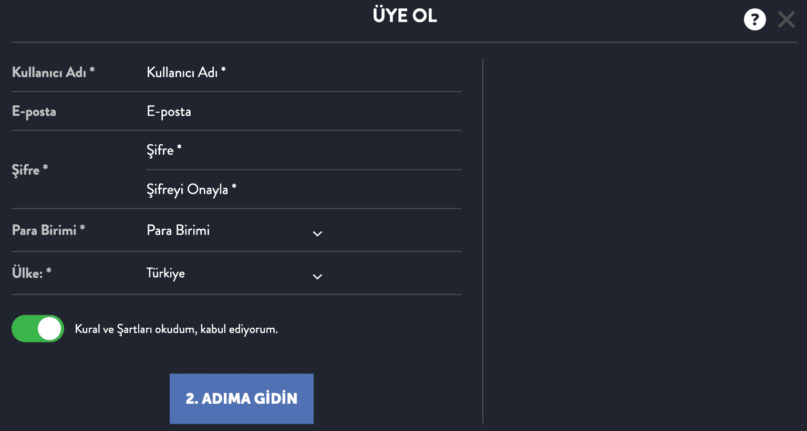

Marsbahis
- Marsbahis Hakkında
- Marsbahis Lisansı
- Marsbahis Giriş
- Kayıt İşlemleri
- Mobil Uygulama ve Mobil Site
- Marsbahis Bahis
- Marsbahis Casino Oyunları
- Sanal Oyunlar
- Promosyon ve Bonus Seçenekleri
- Marsbahis Para Yatırma
- Marsbahis Para Çekme
- İletişim Seçenekleri
- Sıkça Sorulan Sorular
Popüler bir çevrimiçi bahis platformu olan Marsbahis, spor kitapları, canlı bahisler, casino oyunları, çevrimiçi casino oyunları, E-Spor ve sanal sporlar dahil olmak üzere çeşitli bahis seçenekleri sunmaktadır. Kullanıcı dostu arayüzü ve çeşitli teklifleri onu popüler bir seçim haline getirir. Marsbahis, kazanmak için daha fazla fırsat sunmanın yanı sıra, kullanıcılarına çeşitli bonuslar ve promosyonlar da sunmaktadır.
Marsbahis Hakkında
Platformun zamanında ödemelerle tanındığı için Marsbahis'te yavaş ödemeler yapıldığına dair herhangi bir rapor bulunmamaktadır. Modern bankacılık sistemi aynı zamanda hızlı ödemeler sağlar. Online bahisçiler platforma akın ediyor çünkü birçok bahis seçeneği sunuyor. Marsbahis'in temel özelliklerine genel bir bakış aşağıdaki tabloda gösterilmiştir:
| Kategori | Hizmet |
| Saat | 24/7 |
| Destek Kanalları | E-posta, Telefon |
| E-posta | support@marsbahis.com |
| Destek Dilleri | İngilizce, Türkçe |
| Kategori | Spor Bahisleri |
| Platform | PC, Mobil, Tablet |
| Mobil Uygulama | android, iOS |
| App | Evet |
| Yazılım | Özel |
| Alexa Sıralaması | 6699 |
| Ürünler | Bahis, Casino, E-Spor, Oyunlar, Canlı Casino, Piyango, Poker, Sanal Spor |
| Kategori | E-Spor |
| E-Spor | CS:GO, Call of Duty, Dota 2, League of Legends, Overwatch, Rainbow Six, Rocket League, StarCraft |
Genel olarak, Marsbahis çevrimiçi bahisler için güvenilir ve eğlenceli bir platformdur ve farklı kullanıcı tercihlerine uyacak çok çeşitli seçenekler sunar.
Marsbahis Lisansı
Stella Tech BV altında 129958 kayıt numarası ile Marsbahis, Curacao Hükümeti lisansları ve düzenlemeleri altında faaliyet göstermektedir. Bu platformu çalıştırmak için, GLH-OCCHKTW0709212022 alt lisansı altında Oyun Hizmetleri Sağlayıcısı, N.V. #365/JAZ'ın ana lisansı. Bu lisanslamayı kullanarak Marsbahis, kullanıcılarının yüksek adalet ve güvenlik standartlarına bağlı, güvenli ve güvenilir bir bahis ortamı yaşamalarını sağlar.
- Curaçao Hükümeti tarafından lisanslanır ve düzenlenir
- Stella Tech BV altında kayıtlı
- Oyun Hizmetleri Sağlayıcısı, N.V. #365/JAZ Ana Lisansı altında çalışır
- Alt lisans GLH-OCCHKTW0709212022
Marsbahis Giriş
Marsbahis'e başlamak basittir. Hesabınıza erişmek için platformun ana sayfasındaki "Giriş Yap" düğmesini tıklayın. Yeni bir kullanıcıysanız, "Kaydol" u tıklayarak kaydolabilirsiniz.
- Basit giriş işlemi
- Mevcut kullanıcılar için "Oturum Aç" düğmesi
- Yeni kullanıcılar için "Kaydol" seçeneği
Marsbahis Güncel Adres
Şu anda, Marsbahis'e www.marsbahis.com; adresi Dr. M.J. Hugenholtzweg, 25, Curacao'dur. Çeşitli düzenlemeler genellikle çevrimiçi bahis platformlarının web sitesi adreslerini güncellemesine neden olur, bu nedenle güncel olduğundan emin olmak için adresi her zaman saygın bir kaynaktan kontrol etmelisiniz.
- Geçerli web adresi: www.marsbahis.com
- Fiziksel adres: Dr. M.J. Hugenholtzweg 25, Curaçao
- Düzenlemeler nedeniyle web adresinde düzenli güncellemeler
Kayıt İşlemleri
Marsbahis kaydı birkaç adımdan oluşan basit bir işlemdir. Aşağıdaki adımlar, adımlarda size yol gösterir:
| 1 Adım | Marsbahis Web Sitesini Ziyaret Edin | www.marsbahis.com'daki resmi Marsbahis web sitesine giderek başlayın. |
| 2 Adım | Kayıt düğmesini bulun | Ana sayfada "Kaydol" veya "Kaydol" u bulun. Bu genellikle sayfanın sağ üst köşesinde görünür. |
| 3 Adım | Kayıt formunu doldurun | "Kaydol" düğmesine tıkladığınızda, kayıt formuna gideceksiniz. Buraya bazı kişisel bilgiler girebilirsiniz. Yalnızca tam adınızı, doğum tarihinizi ve e-posta adresinizi vermeniz gerekir. |
| 4 Adım | Hesap ayrıntılarınızı ayarlayın | Kişisel bilgilerinizi girerken, bir kullanıcı adı ve şifre seçmeniz gerekir. Hesabınızı korumak için şifrenizin güçlü olduğundan emin olun. |
| 5 Adım | Şartlar ve Koşulları kabul edin | Kaydınızı tamamlamadan önce Marsbahis'in hüküm ve koşullarını okuyup kabul etmeniz bir gerekliliktir. Bir Marsbahis kullanıcısı olarak hak ve sorumluluklarınızı dikkatlice inceleyerek öğrenin. |
| 6 Adım | Kayıt İşlemini Tamamlayın | "Kaydı Tamamla" veya "Gönder" i tıkladıktan sonra kayıt işlemi tamamlanacaktır. |
| 7 Adım | Hesabınızı doğrulayın | Kayıt işlemini tamamladıktan sonra Marsbahis, aldığınız e-postadaki bağlantıya tıklayarak hesabınızı doğrulamanızı isteyebilir. |
| 8 Adım | İlk Para Yatırma İşleminizi Yapın | İlk para yatırma işleminizi yapabilir ve hesabınızı doğruladığınızda bahis oynamaya başlayabilirsiniz. Marsbahis, ihtiyaçlarınıza uygun çeşitli ödeme yöntemlerine sahiptir. |
Marsbahis web sitesi tasarımı ve konumu, kayıt işleminin nasıl işlediğini etkileyebilir. Gelecekte hesap doğrulama ve para çekme işlemleriyle ilgili sorunları önlemek için lütfen kayıt sırasında doğru hesap bilgilerini sağladığınızdan emin olun.
Mobil Uygulama ve Mobil Site
Marsbahis, hem mobil cihazlar için optimize edilmiş bir web sitesi hem de özel bir Android mobil uygulaması sağlayarak, kullanıcılarının mobil uyumlu bir deneyim yaşamasını sağlar. Marsbahis, kullanıcıların casino oyunları oynamasına, bahis oynamasına ve akıllı telefonlarından diğer özelliklere erişmesine izin veren çeşitli mobil platformlar sunar.
Android mobil uygulaması ile Marsbahis, mobil cihazlarda sorunsuz bir bahis deneyimi sunmak için spor bahisleri, canlı bahisler, casino oyunları ve daha fazlası dahil olmak üzere masaüstü sitesinde bulunan tüm özellikleri sunar. Uygulamanın sezgisel arayüzü, kullanıcıların en sevdikleri oyunları veya spor etkinliklerini mücadele etmeden kolayca bulmalarını sağlar.
Marsbahis'in mobil sitesi ise masaüstü versiyonunun mobil cihazlar için optimize edilmiş bir versiyonunu sunuyor. Bu mobil site hem Android hem de iOS mobil tarayıcılarıyla uyumludur. Spor bahisleri, casino oyunları, canlı bahisler ve daha fazlasına ek olarak, mobil site Marsbahis uygulamasıyla aynı özellikleri sunar
Marsbahis mobil uygulamasının ve mobil sitesinin temel özelliklerini özetleyen bir tablo:
| Özellik | Mobil Uygulama | Mobil Site |
| Peron | Android | android, iOS |
| Spor Bahisleri | Evet | Evet |
| Canlı Bahis | Evet | Evet |
| Casino Oyunları | Evet | Evet |
| Kullanıcı arayüzü | Kullanıcı dostu | Kullanıcı dostu |
| Erişilebilirlik | İndirme gerektirir | Herhangi bir mobil tarayıcıdan erişilebilir |
| Uyumluluk | Android cihazlar | Android ve iOS cihazlar |
Marsbahis'te bulunan mobil platformlar, nerede olursanız olun kesintisiz ve keyifli bahis deneyimlerinden yararlanabilmenizi sağlar.
Marsbahis Bahis
Marsbahis'in sunduğu çeşitli spor bahis seçenekleri vardır:
- Futbol
- Basketbol
- Tenis
- Voleybol
- Buz hokeyi vs.
Marsbahis, birçok spor bahis seçeneği ile kapsamlı bir çevrimiçi bahis platformu sunmaktadır. Platformda, uluslararası ve yerel spor etkinliklerine ve uluslararası liglere ve turnuvalara bahis koyabilirsiniz.
İşte Marsbahis'te bahis oynamak için mevcut olan temel sporları özetleyen bir tablo:
| Spor | Tarif |
| Futbol | Çok çeşitli uluslararası ve yerel futbol maçlarına bahis oynayın |
| Basketbol | Popüler basketbol liglerine ve turnuvalarına bahis yapın |
| Tenis | Dünyanın dört bir yanındaki büyük tenis etkinliklerine bahis oynayın |
| Voleybol | Uluslararası ve yerel voleybol maçlarına bahis oynamanın tadını çıkarın |
| Buz hokeyi | Çeşitli liglerden buz hokeyi oyunlarına bahis yapın |
Marsbahis'e Nasıl Bahis Oynanır?
Bu adımları takip etmek Marsbahis'te bahis oynamanıza yardımcı olacaktır.
- Marsbahis hesabınıza giriş yapın.
- Spor kitabından ilgilendiğiniz sporu seçin.
- Seçilen spor için mevcut maçlara ve liglere göz atın.
- Bahis yapmak istediğiniz maça tıklayın.
- Seçilen maç için mevcut farklı bahis seçeneklerini ve oranları gözden geçirin.
- Tercih ettiğiniz bahis seçeneğini seçin ve bahis kuponunuza ekleyin.
- Bahis yapmak istediğiniz miktarı girin ve bahsinizi onaylayın.
- Bahsinizi tamamlamak için "Bahis Yap" butonuna tıklayın.
Bu adımları izleyerek, Marsbahis'te en sevdiğiniz spor etkinliklerine kolayca bahis oynayabilirsiniz.
Canlı Bahis Sistemi
Marsbahis'te canlı bahisler mevcuttur ve oyuncular devam eden spor etkinliğine göre bahis oynayabilirler. Ekstra heyecan, bahisçilerin canlı olarak neler olup bittiğine dayanarak karar verebilmeleri gerçeğinden kaynaklanmaktadır. Gerçek zamanlı bir skor tablosu, oyun istatistikleri ve diğer ilgili bilgiler platformda sağlanır, böylece kullanıcılar neler olduğunu bilir.
Marsbahis'in canlı bahis sistemi aşağıdaki özellikleri içerir:
- Devam eden spor etkinliklerine gerçek zamanlı bahis
- Skorlar ve oyun istatistikleri hakkında canlı güncellemeler
- Canlı bahisler için çok çeşitli spor etkinlikleri mevcuttur
- Canlı bahisler için rekabetçi oranlar
E-Spor Bahisleri
Marsbahis'te geleneksel spor bahislerinin yanı sıra e-Spor bahisleri de mevcuttur. Bahisler, çeşitli oyunlardaki popüler E-Spor etkinliklerine yerleştirilebilir ve E-Sporların artan popülaritesine hitap eder.
İşte Marsbahis tarafından sunulan oyunlar
| Oyun | Tarif |
| Efsaneler Ligi | Beş oyuncudan oluşan iki takımın diğerinin üssünü yok etmek için yarıştığı popüler bir çok oyunculu çevrimiçi savaş arenası (MOBA) oyunu. |
| Dota 2 | Beş oyuncudan oluşan iki takımın diğerinin "Kadim" ini yok etmek için yarıştığı başka bir MOBA oyunu. |
| CS:GO (Counter- Strike: Küresel Taarruz) | Takımların çeşitli oyun modlarında sırayla terörist ve terörle mücadele ettiği birinci şahıs nişancı oyunu. |
| Overwatch | Oyuncuların kontrol noktalarını güvence altına almak ve savunmak veya bir harita boyunca bir yüke eşlik etmek için birlikte çalıştığı takım tabanlı çok oyunculu birinci şahıs nişancı oyunu. |
| Görev aşkı | Bir battle royale modu da dahil olmak üzere çeşitli modlara sahip popüler bir birinci şahıs nişancı oyunu. |
| Starcraft | Oyuncuların yıldızlararası savaşta üç benzersiz gruptan birini inşa ettiği ve komuta ettiği askeri bir bilim kurgu gerçek zamanlı strateji oyunu. |
Marsbahis'in E-Spor bahis hizmetinin temel özelliklerinden bazıları şunlardır:
- Popüler E-spor etkinliklerinde bahis seçenekleri
- Bahis için çok çeşitli E-Spor oyunları mevcuttur
- E-Spor bahisleri için rekabetçi oranlar
- E-Spor bahis seçeneklerinde kolay gezinme için kullanıcı dostu arayüz
Çeşitli bahis seçenekleri ve rekabetçi oranları, Marsbahis'i E-Spor, geleneksel sporlar, canlı bahisler ve genel olarak çevrimiçi bahisler için mükemmel bir platform haline getirmektedir.
Marsbahis Casino Oyunları
Marsbahis'te slotlardan masa oyunlarına kadar çeşitli casino oyunları mevcuttur ve kullanıcılara kapsamlı bir oyun deneyimi sunar. Casino oyunları bölümü, slotlardan masa oyunlarına kadar çeşitli seçenekler sunar. Marsbahis'te aşağıdakiler de dahil olmak üzere birçok popüler oyun mevcuttur
- Titan'ın Yükselişi - Altın Çağ
- Mars Bonanza
- Havacı
Aşağıdaki tablo, Marsbahis'te bulunan en popüler casino oyunlarından bazılarını özetlemektedir:
| Oyun | Tarif |
| Titan'ın Yükselişi - Altın Çağ | Benzersiz bir temaya ve heyecan verici özelliklere sahip bir slot oyunu |
| Mars Bonanza | Yüksek potansiyel getiri sunan bir başka popüler slot oyunu |
| Havacı | Strateji ve şans unsurlarını birleştiren eşsiz bir oyun |
Aşağıdaki adımlar Marsbahis'te bu oyunları oynarken size rehberlik edecektir:
- Marsbahis hesabınıza giriş yapın.
- "Sanal Sporlar" bölümüne gidin.
- Mevcut oyunlar listesinden oynamak istediğiniz oyuna tıklayın.
- Oyuna başlamak için "Şimdi Oyna"ya tıklayın.
Bahislerinizi koymak ve oyunu oynamak için oyun talimatlarını izleyin.
Promosyon ve Bonus Seçenekleri
Marsbahis'te kullanıcıların oyun deneyimini geliştirmek için çeşitli bonuslar ve promosyonlar mevcuttur. Bu teklifler, kullanıcılara para yatırma bonuslarından nakit para iadesi tekliflerine kadar ekstra değer sunmayı amaçlamaktadır. Marsbahis'te bulunan popüler promosyonlardan ve bonuslardan bazıları şunlardır:
- Anında Mefete Yatırımlarınıza %10 Bonus
- Ethereum Yatırımlarınıza %20 Bonus
- Nakit İade sistemimizde köklü değişiklik! İadenizi istediğiniz zaman alın!
İşte Marsbahis'te mevcut olan bazı önemli promosyonları ve bonusları özetleyen bir tablo:
| Promosyon/Bonus | Tarif |
| Anında Mefete Yatırımlarınıza %10 Bonus | Anında Mefete para yatırma işlemlerinde %10 bonus sunar |
| Ethereum Yatırımlarınıza %20 Bonus | Ethereum para yatırma işlemlerinde %20 bonus sunar |
| Nakit İade sistemimizde köklü değişiklik! İadenizi istediğiniz zaman alın! | Kullanıcıların istedikleri zaman nakit iadelerini talep edebilecekleri bir para iadesi sistemi sunar |
Marsbahis'te bu promosyon ve bonusları almak için şu adımları takip edebilirsiniz:
- Marsbahis hesabınıza giriş yapın.
- "Bonus" bölümüne gidin.
- Mevcut promosyonlara ve bonuslara göz atın ve talep etmek istediğinizi seçin.
- Promosyonu veya bonusu almak için "Şimdi Talep Et" i tıklayın.
Hak talebini tamamlamak için promosyon veya bonus talimatlarını izleyin.
Marsbahis Para Yatırma
Marsbahis hesabınıza para aktarmak kolaydır, ancak bu noktaları unutmayın.
Minimum Depozito: Marsbahis'e çeşitli ödeme yöntemlerini kullanarak para yatırabilirsiniz. Marsbahis'te minimum depozito 10 TL 'dır.
Ödeme Yöntemleri
Para yatırma işlemleri için Marsbahis çok çeşitli ödeme yöntemleri sunmaktadır. Bunlar yaşadığınız yere bağlı olarak değişebilir, ancak web sitesi mevcut yöntemleri belirtmez. Marsbahis'teki mevcut ödeme yöntemlerinden bazılarını ve para yatırmak için ilgili ayrıntıları listeleyen bir tablo:
| Ödeme Yöntemi | Minimum Para Yatırma Tutarı | Para Yatırma İşlem Süresi | Depozito Ücreti |
| Kredi/Banka Kartı | 10 TL | Dakika | Serbest |
| Banka Havalesi | 50 TL | 1-3 iş günü | Serbest |
| E-cüzdanlar | 10 TL | Dakika | Serbest |
| Kripto para birimi | 10 TL | Dakika | Serbest |
Yukarıda belirtilen ödeme yöntemlerinden herhangi birini kullanarak para yatırmak için şu genel adımları takip edebilirsiniz:
- Marsbahis hesabınıza giriş yapın.
- Para yatırma bölümüne veya kasiyer sayfasına gidin.
- Mevcut seçeneklerden istediğiniz ödeme yöntemini seçin.
- Transfer etmek istediğiniz depozito tutarını girin.
- Para yatırma işlemini tamamlamak için ekrandaki talimatları izleyin ve seçilen ödeme yöntemine özgü gerekli bilgileri sağlayın.
- Para yatırma işlemini onaylayın ve paranın Marsbahis hesabınıza yatırılmasını bekleyin.
Para yatırma işlem sürelerinin, seçilen ödeme yöntemine bağlı olarak değişebileceğini unutmayın. Kredi / banka kartları ve e-cüzdanlar gibi bazı yöntemler genellikle anında para yatırma olanağı sunarken, banka havalesi gibi diğerlerinin işlenmesi daha uzun sürebilir.
Nasıl Para Yatırabilirim?
- Henüz kaydolmadıysanız kaydolun: Marsbahis hesabınıza kaydolmak veya giriş yapmak, para yatırmanın ilk adımıdır. Eğer bir hesabınız yoksa, web sitesinde bir Marsbahis hesabı oluşturun. Zaten bir tane varsa, giriş yapabilirsiniz.
- Para Yatırma Bölümüne Gidin: Hesabınızda oturum açın ve para yatırma bölümünü ziyaret edin.
- Bir Ödeme Yöntemi Seçin: Seçtiğiniz yöntemin ihtiyaçlarınıza uygun olduğundan ve kullanılabilir olduğundan emin olun.
- Para Yatırma Tutarını Girin: Marsbahis hesabınıza yatırdığınız tutarı girin. Seçtiğiniz ödeme yönteminin minimum depozito gerektirip gerektirmediğini kontrol ettiğinizden emin olun.
- Para Yatırma İşlemini Onaylayın: Tüm para yatırma ayrıntılarının doğru olduğundan emin olun, ardından para yatırma işleminizi onaylayın. Paranın Marsbahis hesabınızda görünmesi birkaç gün sürecektir.
Marsbahis'teki bir kural, 1.30 veya daha fazla oranla en az bir kez bahis oynamadıkça herhangi bir fonun çekilmesini yasaklar. Bu kural, dolandırıcılığı önlemek için uygulanmaktadır.
Hesap Doğrulama
Marsbahis hesabınızdan para çekmek isteyip istemediğinizi doğrulamanız gerekir. Marsbahis, kimliğinizin bir fotokopisi (ulusal kimlik, ehliyet veya pasaport), adresinizin kanıtı (hükümet veya banka tarafından verilen bir mektubun bir kopyası) ve kredi kartınızın bir fotokopisi (kredi kartı kullanıyorsanız yalnızca ilk altı ve son dört rakamın görünür olması gerekir) ile e-posta göndermenizi gerektirir.
Önemli Notlar
Marsbahis, üçüncü şahısların hesabınızı bu işlemler için kullanmasına izin vermez, bu nedenle para yatırırken ve çekerken hesabınızı kullandığınızdan emin olun. Ayrıca, Marsbahis doğrudan kendisine veya bir Ödeme Çözümü Sağlayıcısına gönderilen nakit fonları kabul etmemektedir. İşlemlerin gerçekleşebilmesi için Finansal Kurumların veya Ödeme Çözümü Sağlayıcılarının onaylaması gerekir.
Marsbahis Para Çekme
Marsbahis hesabınızdan para çekmek basit bir işlemdir. İşte Marsbahis'te nasıl para çekileceği ve mevcut para çekme yöntemleri hakkında bir rehber.
Para Çekme Nasıl Yapılır?
- Hesabınıza Giriş Yapın: Giriş bilgilerinizi kullanarak Marsbahis hesabınıza erişin.
- Para Çekme Bölümüne Gidin: Marsbahis web sitesindeki para çekme bölümüne veya kasiyer sayfasına gidin.
- Bir Para Çekme Yöntemi Seçin: Tercihlerinize uyan ve bulunduğunuz yerde kullanılabilen para çekme yöntemini seçin.
- Para Çekme Tutarını Girin: Marsbahis hesabınızdan çekmek istediğiniz tutarı belirtin. Seçilen yönteme bağlı olarak minimum ve maksimum para çekme limitleri olabileceğini unutmayın.
- Para Çekme İşlemini Onaylayın: Para çekme ayrıntılarını gözden geçirin ve tüm bilgilerin doğru olduğundan emin olun. Para çekme talebini onaylayın.
- İşleme için Bekleyin: Para çekme işlemleri için işlem süresi, seçilen yönteme ve diğer faktörlere bağlı olarak değişebilir. Marsbahis, para çekme işlemlerini derhal işlemeyi amaçlamaktadır, ancak işlemin tamamlanması için ek sürenin gerekebileceğini belirtmek önemlidir.
- Paranızı Alın: Para çekme talebi işleme alındıktan sonra, fonları seçtiğiniz para çekme yönteminde alacaksınız.
Para çekme işlemi yapmadan önce hesap doğrulama işlemini tamamlamanız gerekebileceğini unutmayın. Bu tipik olarak, para çekme işleminin güvenliğini ve bütünlüğünü sağlamak için Marsbahis'e kimlik belgeleri ve adres kanıtı sağlamayı içerir.
Para Çekme Yöntemi Seçenekleri
Marsbahis, farklı kullanıcı tercihlerine hitap etmek için bir dizi para çekme yöntemi sunar. Kullanılabilir yöntemler bulunduğunuz yere bağlı olarak değişebilir. İşte Marsbahis'te mevcut olan yaygın para çekme yöntemlerinden bazılarını özetleyen bir tablo:
| Para Çekme Yöntemi | Minimum Para Çekme Miktarı | Para Çekme İşlem Süresi | Para Çekme Ücreti |
| Kredi/Banka Kartı | 10 Dolar | 1-3 iş günü | Serbest |
| Banka Havalesi | 100 Dolar | 3-5 iş günü | Serbest |
| E-cüzdanlar | 10 Dolar | 24 saat içinde | Serbest |
| Kripto para birimi | 10 Dolar | 24 saat içinde | Serbest |
Marsbahis İletişim Seçenekleri
İşte Marsbahis'in kullanıcılarına sunduğu çeşitli iletişim seçenekleri
İşte Marsbahis'in kullanıcılarına sunduğu çeşitli iletişim seçenekleri
1. E-posta Desteği
Marsbahis, kullanıcıları için e-posta desteği sağlayabilir. E-posta adresi genellikle web sitesinin 'Bize Ulaşın' veya 'Destek' bölümünde bulunabilir.
2. Canlı Sohbet
Birçok çevrimiçi platform canlı sohbet desteği sunar. Varsa, Marsbahis kullanıcıları bu özelliği gerçek zamanlı yardım için kullanabilirler.
3. Telefon Desteği
Marsbahis destek temsilcileriyle doğrudan iletişim sağlayan telefon desteği mevcut olabilir.
4. Destek İstasyonu
Marsbahis, kullanıcıların yardım makalelerini bulabilecekleri ve muhtemelen destek biletleri gönderebilecekleri bir Destek İstasyonuna sahiptir. Marsbahis Destek İstasyonu, kullanıcılara yardımcı olmak için çeşitli kaynaklar sağlar.
5. Sosyal Medya
Marsbahis, kullanıcıların destek için mesaj veya yorum gönderebilecekleri sosyal medya profillerine sahip olabilir.
| İletişim Seçeneği | Tarif | Kullanılabilirlik | Yanıt Süresi |
| E-posta Desteği | E-posta yoluyla doğrudan iletişim | Web sitesini kontrol et | Sorguya bağlıdır |
| Canlı Sohbet | Gerçek zamanlı yardım | Web sitesini kontrol et | Hazır |
| Telefon Desteği | Telefon üzerinden doğrudan iletişim | Web sitesini kontrol et | Hazır |
| Destek İstasyonu | Yardım makaleleri ve destek biletleri | Bağlantı | Sorguya bağlıdır |
| Sosyal Medya | Sosyal medya profilleri üzerinden iletişim | Web sitesini kontrol et | Sorguya bağlıdır |
Sonuç
Marsbahis, çok çeşitli bahis ve oyun seçenekleri sunan kapsamlı bir çevrimiçi bahis platformudur. İster bir spor tutkunu, ister bir kumarhane aşığı veya sanal oyunların heyecanını arayan biri olun, Marsbahis'te herkes için bir şeyler vardır.
Kullanıcı dostu arayüzü, çeşitli teklifleri ve rekabetçi oranları ile Marsbahis, sorunsuz ve keyifli bir bahis yolculuğu sağlar. Platform lisanslı ve düzenlenmiştir, çevrimiçi bahisler için güvenli ve emniyetli bir ortam sağlar. Çeşitli ödeme yöntemleri, hızlı ödemeler ve özel müşteri desteği ile Marsbahis, çevrimiçi bahisler için güvenilir bir seçenek olarak öne çıkıyor.